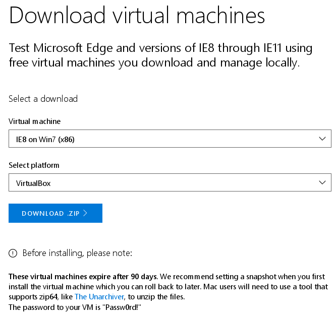
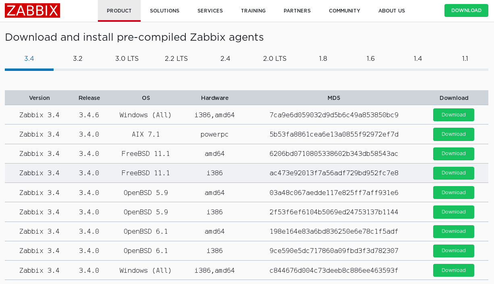
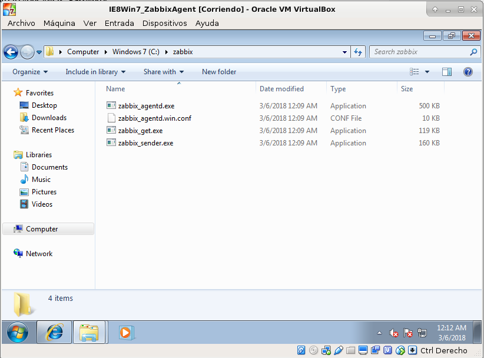
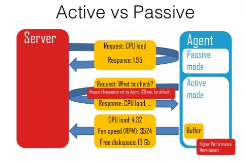

Descarga agente
Voy a virtualizar una máquina MS Win7 (x86) en VirtualBox para configurarlo como agente Zabbix. La buena noticia es que Microsoft ofrece la descarga de sistemas operativos virtualizados (Win7,Win81 y Win10) de forma gratuita en periodo de evaluación de 90 pero sin ninguna restricción (enlace).

Vamos a descargar un agente precompilado (el binario o ejecutable final) para MS Win i386 zabbix_agents_3.4.6.win.zip de la Web oficial de Zabbix (enlace)

Despues de descargar y descomprimir los ficheros he creado una carpeta en el raiz 'C:\zabbiz' y he copiado los ejecutables para win32 y el fichero de configuración 'zabbix_agentd.win.conf'.

Ficheros:
- zabbix_agentd.win.conf: Fichero de texto plano que contiene la configuración del agente y del servidor Zabbix con el que debe comunicar.
- zabbix_agentd.exe: Agente que podemos ejecutar de forma puntual o instalar como servicio de Win que se ejecute con el arranque del SO.
- zabbix_get.exe: Utilidad de línea de comandos para obtener datos de un agente Zabbix (zabbix_get - Zabbix get utility).
- zabbix_sender.exe: Utilidad de línea de comandos para mandar datos de monitorización a un servidor Zabbix (zabbix_sender - Zabbix sender utility).
Configuración zabbix_agentd.win.conf
Podemos ejecutar más de una instancia del agente Zabbix, antes de ejecutar por primera vez 'zabbix_agentd.exe' hay que configurar los parámetros mínimos en el archivo 'zabbix_agentd.win.conf' para que realize la conexión con el servidor.
LogType=file.LogFile: Hacemos que apunte aLogFile=c:\zabbix\zabbix_agentd.logpara poder analizar la ejecución del agente, especialmente en caso de problemas.DebugLevel=5: Información detallada en los logs.SourceIP=192.168.221.107. Dirección IP de nuestra máquina Win7 para conexiones salientes.EnableRemoteCommands=1. Permitir comandos remotos.LogRemoteCommands=1. Registrar comandos remotos como logs de warning.
A continuación el fichero tiene dos apartados dependiendo del comportamiento del agente.

Agente pasivo 'polling': El servidor Zabbix es quien interroga al agente, el agente procesa la petición y retorna el valor.
Server=192.168.221.102: Nombre del host o dirección de red del servidor.ListenPort=10050: Puerto local del agente donde "escuchará" las conexiones entrantes del servidor.ListenIP=192.168.221.107: IP local del agente.
Agente activo 'trapping': El agente solicita al servidor una lista de checks activos. El agente remite esta información de forma periódica al servidor.
ServerActive=192.168.221.102.Hostname=IE8WIN7: Nombre de host del agente (debe coincidir con el nombre configurado en el servidor).
Primera ejecución
Con la configuración básica realizada es el momento de ejecutar el agente por línea de comandos para probarlo:
c:\zabbix>zabbix_agentd.exe -c c:\zabbix\zabbix_agentd.win.conf -f
Para poder visualizar el agente debemos añadirlo como host en el frontend Web del servidor Zabbix.
Enlaces externos
- 4 Zabbix agent (Windows): he parameters supported in a Zabbix agent (Windows) configuration file.